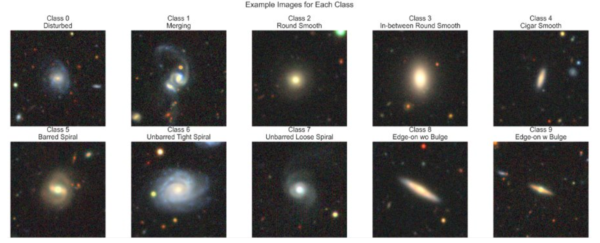
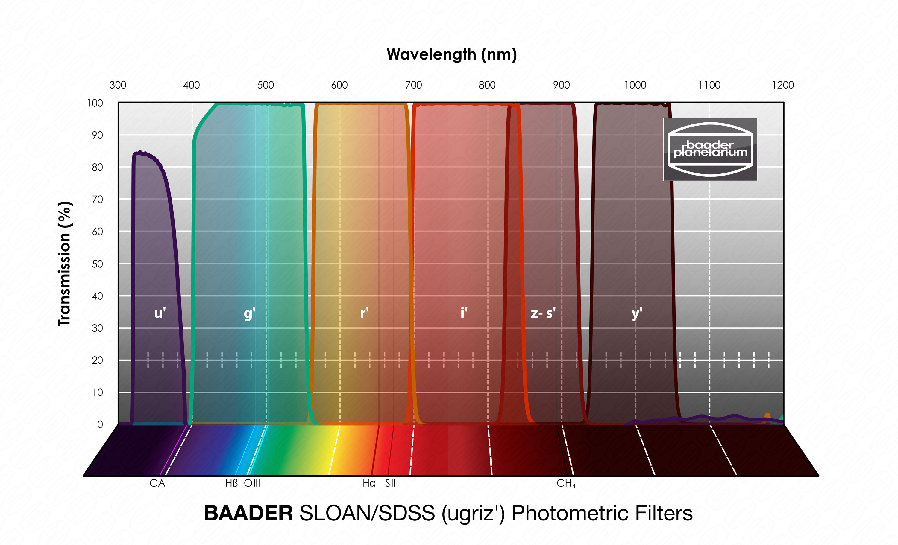

A Machine-Learning Approach to Galaxy Morphology and Parameter Estimation
Yash R. Bhora, Benjamin Ecsedy
Motivation
Previous research provides a strong foundation for our project. CNN-based models, especially when enhanced by transfer learning and ample data augmentation, have proven highly effective for galaxy morphology classification, even as the data volume grows into the millions. Likewise, machine learning and Bayesian techniques have shown great promise in predicting galaxies' numerical parameters from photometry, often outperforming classical methods and scaling to the needs of next-generation surveys. By drawing on these advancements, our project implements and compares state-of-the-art approaches in a unified study. The goal is to demonstrate how modern machine learning can handle both image-based classification and multi-variable regression in astrophysics, and to evaluate the benefits of network choice, transfer learning, and Bayesian modeling in the context of a class research project.
Dataset
The data was obtained from two different source: galaxy image data was obtained from the the Galaxy DECaLS Dataset, containing 17736 256x256 pixels colored galaxy images (g, r and z band) for 10 morphologies shown below. Additionally, galaxy magnitude simulation data was obtained from from the Rubin Observatory of galaxy magnitude measurements of different color filters in six astronomical bands using the Buzzard V-1.0 simulation.
Example Galaxy Images
Example images from each morphological class, showcasing the diverse appearances of galaxies used for training.
Filter Spectra
Wavelength transmission for each of the u, g, r, i, z, and y filters.
Goals
Primary goal: Evaluate the impact of data augmentation and model complexity on classification and prediction. As such, the main tasks at hand were to:
- Compare performance using “raw” images vs enhanced with data augmentation.
- Assess performance gains among three CNN architectures: SimpleCNN, PowerfulCNN, and EfficientNet_B2 (transfer-learning).
- Determine the predictive power of a simplified statistical model on astronomical data.
References
- Agena Astro. Baader SLOAN/SDSS (ugriz') Photometric Filter Set - 1.25" Mounted # FSLNSET-1 2961700.
- Benítez, N. (1998). Bayesian photometric redshift estimation. The Astrophysical Journal, (Vol. 536, Issue 2, pp. 571-583).
- Dieleman, S., Willett, K. W., & Dambre, J. (2015). Rotation-invariant convolutional neural networks for galaxy morphology prediction. Monthly Notices of the Royal Astronomical Society, 450(2), 1441–1459.
- Leung, H. W., & Bovy, J. (2019). Galaxy10 DECaLS: A CIFAR10-like dataset for galaxy morphology classification [Data set]. Zenodo.
- Schmidt, S. J. (2020). Evaluation of probabilistic photometric redshift estimation approaches for The Rubin Observatory Legacy Survey of Space and Time (LSST). Monthly Notices of the Royal Astronomical Society, (Volume 499, Issue 2, pp. 1587–1606).
- Schneider, J., Stenning, D. C., & Elliott, L. T. (2023). Efficient galaxy classification through pretraining. Frontiers in Astronomy and Space Sciences, 10.
- Sloan Digital Sky Survey, What is Color?, SkyServer DR1.
- Tan, M., & Le, Q. V. (2019). EfficientNet: Rethinking model scaling for convolutional neural networks. In Proceedings of the 36th International Conference on Machine Learning (Vol. 97, pp. 6105–6114). PMLR.